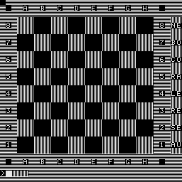

*****************************************************************
C H E S S M A S T E R Z 1013
*****************************************************************
Programmstandort: 0B0H - 3400H
Headersave-Laden: @L, danach wird Progr. von 100H-3490H geladen;
nach einem Autostart auf 3450H wird Programm
nach 0B0H geladen und gestartet
Headersave-Saven: nur durch vorhergehendes Autostartverbot und @S::
Progammrestart: J 2800 oder @S
Kommandos:
-----------
NE (NEW) Aufstellung der Figuren
LE (LEVEL) Spielstaerke 0 - 7
RA (RANDOMIZE) Zufallsgenerator 0 - 4
RE (REFERE) Rechner ist Schiedsrichter
SE (SELFPLAY) Rechner spielt gegen sich selbst
mit Quittung durch ENTER
AU (AUTO) Rechner spielt automatisch gegen
sich selbst
CO (COLOR) Doppelfunktion:
1.Farbwahl: Weiss - Rechner
Schwarz - Spieler
Rechner gibt weissen Zug vor,
angenommen wird mit SPACE,ENTER
nach NE hat der Rechner schwarz
2. Zugvorschlag durch Rechner
nach CO Zugvorschlag fuer eigene Partei -> nur mit
ENTER quittieren -> vorgeschl. Zug kann durch dessen
Eingabe ausgefuehrt werden
BO (BORD) Eingabemodus fuer Schachprobleme
z.B. KE4 = weisser Koenig auf E4
-KE4 = schwaz. Koenig auf E4
Uebergang in Spielmodus BO,SPACE,ENTER
Beispiele:
------------
NE,ENT Aufstellen der Figuren
LE,ENT,4 Spielstaerke 4
RA,ENT,2 Zufallsgenerator 2
E2E6 Zug des weissen Spielers
Rechner zeigt seinen Zug durch
Zeichen im Anfangs- und Endfeld an
Quittieren mit ENTER
Kennton ueber TB-Geraet (Aufn.)
E1G1 Weiss - kurze Rochade
E1C1 Weiss - lange Rochade
* Falsche Zuege oder Nichtbeachten, dass Koenig im SCHACH ist,
wird durch "***" angezeigt
* Abbruch des Spieles jederzeit mit "NE" moeglich
* PATT und MATT werden kurzzeitig angezeigt (mit Kennton)
* Ab Spielstaerke 2 koennen die Zuege bereits recht lange
dauern, desshalb TB auf Aufnahme, damit Rechner seinen Zug
mit Kennton melden kann
* Vor Programmstart ist es ratsam, fuer eine bessere Zugeingabe,
die Tastatur auf HEX-MOD zu schalten